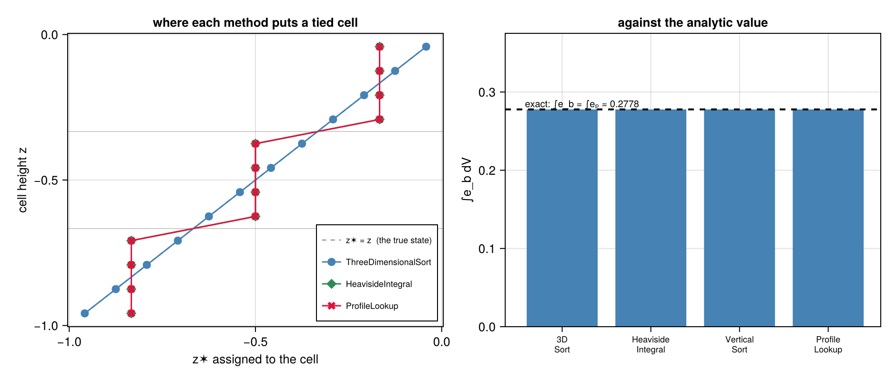
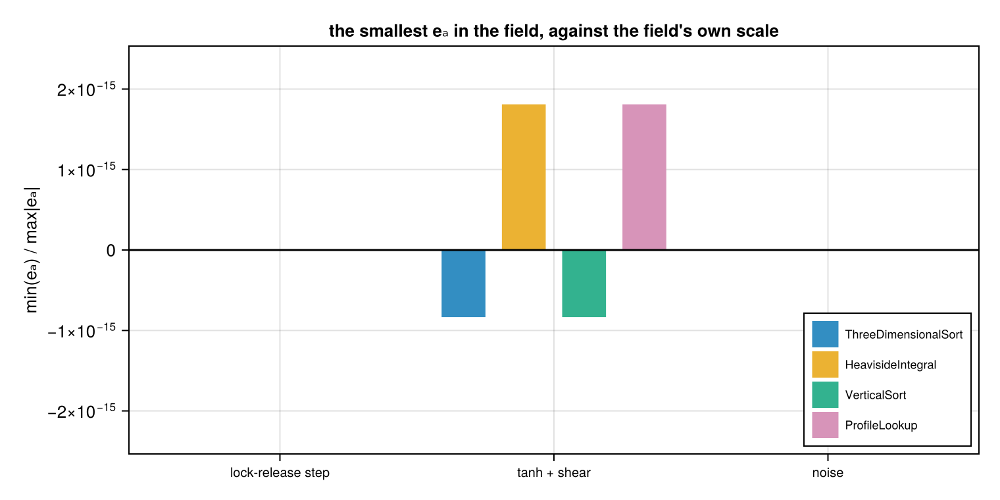

The sorted reference state
This page checks the reference state that reference_height builds, and the two energies that rest on it, against answers that are known independently of the code. Everything here runs when the documentation is built, so a regression breaks the build rather than quietly changing a number.
The checks lean on three facts that hold no matter which AbstractReferenceHeightMethod is used:
- a field that is already sorted is its own reference state, which fixes $\int e_b \, \mathrm{d}V$ and $\int e_a \, \mathrm{d}V$ in closed form;
- the methods describe one reference state, so they must agree on the volume integrals;
- the local $e_a$ is non-negative everywhere in space.
using Oceananigans, Oceanostics, CairoMakie, Printfusing Oceananigans.Fields: interiorset_theme!(Theme(fontsize = 13))methods = ("ThreeDimensionalSort" => ThreeDimensionalSort(), "HeavisideIntegral" => HeavisideIntegral(), "VerticalSort" => VerticalSort(), "ProfileLookup" => ProfileLookup())volume_integral(op) = sum(∫dV(op))# Pair the buoyancy with the reference height it was assigned and order by z✶. On the model grid that# reordering is what recovers the profile; on the sorted column it is already in order.function reference_profile(z✶) heights = vec(Array(interior(z✶))) buoyancies = vec(Array(interior(reference_buoyancy(z✶)))) p = sortperm(heights) return buoyancies[p], heights[p]end# Every check on the page lands here, and the last block fails the build if any of them did not pass.checks = Tuple{String, Bool}[]function check(name, got, want; atol = 0, rtol = 0) ok = isapprox(got, want; atol, rtol) push!(checks, (name, ok)) return okendA field that is already its own reference state
Take a column whose buoyancy only increases with height. No adiabatic rearrangement can lower its potential energy, so the state of minimum potential energy is the state it is already in. That pins both energies without reference to any particular method:
\[\int e_b \, \mathrm{d}V = \int e_p \, \mathrm{d}V , \qquad \int e_a \, \mathrm{d}V = 0 .\]
The column below is built in three layers of four cells, so every cell is tied in buoyancy with three others. Ties are where the methods are free to differ: each one has to put a whole run of equal-buoyancy cells somewhere, and only the placement's volume-weighted mean is pinned. The buoyancy levels are $0, 1, 2$ rather than $-1, 0, 1$ on purpose, since levels symmetric about zero make the per-layer errors cancel in the sum and would hide a bias.
N, n_layers = 12, 3column = RectilinearGrid(size = N, z = (-1, 0), topology = (Flat, Flat, Bounded))sorted_model = NonhydrostaticModel(column; buoyancy = BuoyancyTracer(), tracers = :b)set!(sorted_model, b = reshape(repeat(collect(0:(n_layers - 1)), inner = N ÷ n_layers), 1, 1, N))∫eₚ = volume_integral(PotentialEnergy(sorted_model))sorted_E_b, sorted_Eₐ, sorted_z✶ = Dict(), Dict(), Dict()for (name, method) in methods z✶ = reference_height(sorted_model; method) sorted_E_b[name] = volume_integral(BackgroundPotentialEnergy(sorted_model, z✶)) sorted_Eₐ[name] = volume_integral(AvailablePotentialEnergy(sorted_model, z✶)) sorted_z✶[name] = vec(Array(interior(z✶))) check("$name: ∫e_b = ∫eₚ on a sorted field", sorted_E_b[name], ∫eₚ; rtol = 1e-10) check("$name: ∫eₐ = 0 on a sorted field", sorted_Eₐ[name], 0; atol = 1e-12)end@printf("exact: ∫e_b dV = ∫eₚ dV = %+.8f, ∫eₐ dV = 0\n\n", ∫eₚ)@printf(" %-22s %14s %12s %14s\n", "method", "∫e_b dV", "error", "∫eₐ dV")for (name, _) in methods @printf(" %-22s %+14.8f %11.2e %14.2e\n", name, sorted_E_b[name], (sorted_E_b[name] - ∫eₚ) / abs(∫eₚ), sorted_Eₐ[name])endexact: ∫e_b dV = ∫eₚ dV = +0.27777778, ∫eₐ dV = 0
method ∫e_b dV error ∫eₐ dV
ThreeDimensionalSort +0.27777778 0.00e+00 1.16e-18
HeavisideIntegral +0.27777778 2.00e-16 0.00e+00
VerticalSort +0.27777778 0.00e+00 1.16e-18
ProfileLookup +0.27777778 2.00e-16 0.00e+00The left panel shows where each method sends a tied cell. ThreeDimensionalSort gives every cell its own slot, so it climbs the diagonal and spreads a layer across the band that layer fills. HeavisideIntegral and ProfileLookup instead collapse each layer onto the mid-height of its band, which is the volume-weighted mean of that spread. All three therefore carry the same volume integral, which is the right panel.
zc = vec(Array(znodes(column, Center())))fig1 = Figure(size = (940, 400))ax = Axis(fig1[1, 1]; xlabel = "z✶ assigned to the cell", ylabel = "cell height z", title = "where each method puts a tied cell")lines!(ax, zc, zc; color = (:black, 0.35), linestyle = :dash, label = "z✶ = z (the true state)")for (name, colour, mark) in (("ThreeDimensionalSort", :steelblue, :circle), ("HeavisideIntegral", :seagreen, :diamond), ("ProfileLookup", :crimson, :xcross)) scatterlines!(ax, sorted_z✶[name], zc; color = colour, marker = mark, markersize = 12, label = name)endhlines!(ax, [-1 + 1/3, -1 + 2/3]; color = (:gray, 0.5), linewidth = 0.8) # the layer boundariesaxislegend(ax; position = :rb, labelsize = 9)names = first.(methods)ax2 = Axis(fig1[1, 2]; ylabel = "∫e_b dV", title = "against the analytic value", xticks = (1:4, ["3D\nSort", "Heaviside\nIntegral", "Vertical\nSort", "Profile\nLookup"]), xticklabelsize = 9)barplot!(ax2, 1:4, [sorted_E_b[n] for n in names]; color = :steelblue)hlines!(ax2, [∫eₚ]; color = :black, linestyle = :dash, linewidth = 2)text!(ax2, 0.55, ∫eₚ; text = " exact: ∫e_b = ∫eₚ = $(round(∫eₚ, digits = 4))", align = (:left, :bottom), fontsize = 10)ylims!(ax2, 0, 1.35∫eₚ)fig1
A field with no ties
When no two cells share a buoyancy there is no placement freedom left: every cell has a slot of its own, so the methods have to agree on z✶ cell by cell, not merely in the integral. The field below scatters Nx*Ny*Nz distinct buoyancies over the domain with a stride permutation, so the spatial arrangement bears no relation to the sorted one and the sort has to do real work to undo it.
Nx, Ny, Nz = 4, 3, 4n = Nx * Ny * Nzbox = RectilinearGrid(size = (Nx, Ny, Nz), x = (0, 1), y = (0, 1), z = (-1, 0))tiefree_model = NonhydrostaticModel(box; buoyancy = BuoyancyTracer(), tracers = :b)scrambled = zeros(n)for m in 1:n # a bijection, since gcd(7, n) = 1 scrambled[1 + mod(7 * (m - 1), n)] = -0.5 + (m - 1) / (n - 1)endset!(tiefree_model, b = reshape(scrambled, Nx, Ny, Nz))tiefree_profile, tiefree_gap = Dict(), Dict()baseline = vec(Array(interior(reference_height(tiefree_model, method = ThreeDimensionalSort()))))for (name, method) in methods z✶ = reference_height(tiefree_model; method) tiefree_profile[name] = reference_profile(z✶) # `VerticalSort` answers on its own column, so compare the sorted set of heights it assigns heights = vec(Array(interior(z✶))) tiefree_gap[name] = maximum(abs, sort(heights) .- sort(baseline)) check("$name: z✶ matches the ranked sort on a tie-free field", tiefree_gap[name], 0; atol = 1e-12)end@printf(" %-22s %24s\n", "method", "max |z✶ - z✶(ranked sort)|")for (name, _) in methods @printf(" %-22s %24.2e\n", name, tiefree_gap[name])end method max |z✶ - z✶(ranked sort)|
ThreeDimensionalSort 0.00e+00
HeavisideIntegral 1.11e-16
VerticalSort 0.00e+00
ProfileLookup 3.89e-16Plotting the buoyancy against the reference height it was assigned gives the reference profile $b^\star(z^\star)$. All four land on the same curve, and the deviation from the default sits at the level of floating-point round-off rather than at the grid scale.
fig2 = Figure(size = (940, 400))ax = Axis(fig2[1, 1]; xlabel = "b✶", ylabel = "z✶", title = "the reference profile, four ways")for ((name, _), colour, mark) in zip(methods, (:steelblue, :seagreen, :darkorange, :crimson), (:circle, :diamond, :rect, :xcross)) b✶, z✶ = tiefree_profile[name] scatterlines!(ax, b✶, z✶; color = colour, marker = mark, markersize = 10, label = name)endaxislegend(ax; position = :rb, labelsize = 9)ax2 = Axis(fig2[1, 2]; ylabel = "max |z✶ - z✶(ranked sort)|", yscale = log10, title = "agreement is at round-off, not at the grid scale", xticks = (1:4, ["3D\nSort", "Heaviside\nIntegral", "Vertical\nSort", "Profile\nLookup"]), xticklabelsize = 9)floor_ = 1e-18barplot!(ax2, 1:4, [max(tiefree_gap[n], floor_) for n in names]; color = :steelblue)hlines!(ax2, [eps(Float64)]; color = :black, linestyle = :dash)text!(ax2, 0.55, eps(Float64); text = " eps(Float64)", align = (:left, :bottom), fontsize = 10)hlines!(ax2, [1 / Nz]; color = :crimson, linestyle = :dot)text!(ax2, 0.55, 1 / Nz; text = " one grid cell", align = (:left, :bottom), fontsize = 10, color = :crimson)ylims!(ax2, floor_ / 5, 1)fig2
The local available potential energy is non-negative
Oceanostics computes $e_a$ in its local form, the density of Holliday & McIntyre (1981). A parcel carries $b = b^\star(z^\star)$ and $b^\star$ is non-decreasing, so the integrand $b^\star(\tilde z) - b$ takes the sign of $\tilde z - z^\star$ along the whole path and the integral comes out positive whichever side of its reference height the parcel sits. Unlike the global difference $e_p - e_b$ this holds cell by cell, which is what makes $e_a$ worth mapping as a field.
The check below sweeps three fields that stress the sort differently: a lock-release step where almost every cell is tied, a smooth stratification with a horizontal disturbance, and unstructured noise.
fields = ("lock-release step" => (x, y, z) -> x < 0.5 ? -0.5 : 0.5, "tanh + shear" => (x, y, z) -> 0.5 * tanh(4(z + 0.5)) + 0.2 * sinpi(2x), "noise" => (x, y, z) -> sinpi(3x) * cospi(5y) * sinpi(7z))worst = Dict{String, Float64}()for (field_name, setter) in fields, (name, method) in methods model = NonhydrostaticModel(box; buoyancy = BuoyancyTracer(), tracers = :b) set!(model, b = setter) z✶ = reference_height(model; method) eₐ = interior(Field(AvailablePotentialEnergy(model, z✶))) scale = max(maximum(abs, eₐ), eps(Float64)) worst["$field_name / $name"] = minimum(eₐ) / scale check("$field_name / $name: eₐ ≥ 0", min(minimum(eₐ) / scale, 0), 0; atol = 1e-10)end@printf(" %-22s %22s\n", "field", "worst min(eₐ)/max|eₐ|")for (field_name, _) in fields w = minimum(worst["$field_name / $(n)"] for (n, _) in methods) @printf(" %-22s %22.2e\n", field_name, w)end field worst min(eₐ)/max|eₐ|
lock-release step 0.00e+00
tanh + shear -8.34e-16
noise -4.14e-18fig3 = Figure(size = (760, 380))ax = Axis(fig3[1, 1]; ylabel = "min(eₐ) / max|eₐ|", title = "the smallest eₐ in the field, against the field's own scale", xticks = (1:length(fields), [f for (f, _) in fields]), xticklabelsize = 10)for (i, (name, _)) in enumerate(methods) offset = 0.22 * (i - 2.5) vals = [worst["$(f) / $(name)"] for (f, _) in fields] barplot!(ax, (1:length(fields)) .+ offset, vals; width = 0.2, label = name)endhlines!(ax, [0]; color = :black, linewidth = 1.5)axislegend(ax; position = :rb, labelsize = 9)# let the axis follow the data, so a strictly positive field is not clipped at the framelim = 1.4 * max(maximum(abs, collect(values(worst))), eps(Float64))ylims!(ax, -lim, lim)fig3
Read against the zero line: a bar above it means every cell in that field carries a strictly positive $e_a$, and a bar below it means the smallest value dipped negative by a few floating-point epsilons. Either way the excursion scales with the field rather than with the grid, which is what marks it as round-off in the $\Psi$ integral rather than a breach of the bound.
Result
failed = [name for (name, ok) in checks if !ok]@printf("%d checks, %d passed, %d failed\n", length(checks), length(checks) - length(failed), length(failed))isempty(failed) || error("validation failed:\n " * join(failed, "\n "))"all $(length(checks)) checks passed""all 24 checks passed"